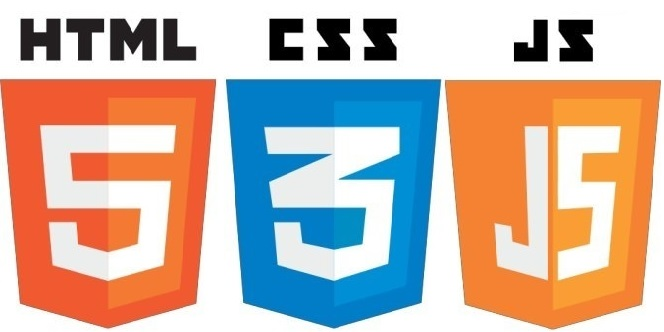

Домашка JS
Урок №8
Стрілочні функції, рекурсія, планування: setTimeout і setInterval.
Задача :
- Задача №1 перший 'Коля!',бо функція буде виконана після завершення роботи setTimeout
- Задача №2 вірно визвана функція
- Задача №3 НЕ вірно - функція оголошена до її виконання
- Задача №4 функція визвана за межами блоку, тому потрібно оголосити змінну за межами блоку
Урок №12
Масиви. Методи масивів. Редагування, пошук, сортування.
Задача :
- Задача №1 буде 4 (довжина)
- Задача №2 виконано, виведено в Консолі
- Задача №3 видаляємо за допомогою ".splice" та призначаємо видаленому елементу нову зміну
- Задача №4 робимо за допомогою ".split"
- Задача №5 на початку роботи previousValue = 9
Урок №13
Document object model (DOM) протягом години. Зміна HTML CSS. Атрибути та властивості. Оточення.
Задача №1
const getElement = document.querySelectorAll('[data-say-hi="yes"]');
Привіт!
Задача №2
const elem = document.querySelectorAll('li'); console.log(elem[1]);
- Корчі
- Йончі
Задача №3
const elems = document.querySelectorAll('.like'); console.log(elems);
Задача №4
'Текст' додасться після останнього дочірнього елемента, але так буде працювати з методом пошуку "document.querySelector", а у завданні зазначений "querySelectorAll", що викличе помилку
- Пункт 1
- Пункт 2
Урок №14
Pозміри прокручування та координати елементів на сторінці та вікна браузера
Задача №1
ширина прокрутки = windowWidth - mainElementWidth
- Задача №2 виконано, виведено в Консолі
Задача №3
